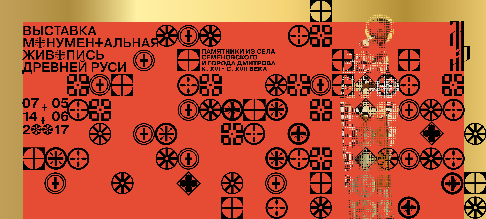

<!DOCTYPE html>
<html>
  <head>
    <meta charset="utf-8">
    <title>МУЗЕЙ ИМ. АНДРЕЯ РУБЛЕВА</title>

    <link rel="stylesheet" href="stylesheets/style.css">

    <script type="text/javascript" src="javascripts/jquery.js"></script>
    <!-- <script type="text/javascript" src="javascripts/js.cookie.js"></script> -->
    <script type="text/javascript" src="https://cdnjs.cloudflare.com/ajax/libs/jquery-cookie/1.4.1/jquery.cookie.min.js"></script>

    <script type="text/javascript" src="javascripts/history.js"></script>
    <script type="text/javascript" src="javascripts/scrollfix.js"></script>
    <script type="text/javascript" src="javascripts/gallery.js"></script>
    <script type="text/javascript" src="javascripts/preload.js"></script>
    <!-- <script type="text/javascript" src="javascripts/stain.js"></script> -->
  </head>
  <body>
    <script type="text/javascript">
      $(window).load(function() {
        if (readCookie('referer') == null){
          $(".preload").css({"display":"block", "animation-name":"preload"});
        $(".main").css({"animation-name":"view"});
        }
        createCookie('referer',1,0);
      });
    </script>
    <section class="preload">
    </section>

    <section class="main">

      <div class="logo">
        
      </div>

      <div id="layout" class="layout">
        <!--  -->
        <!--  -->
        <!-- <figure>
          <svg id="Layer_2" data-name="Layer 2" xmlns="http://www.w3.org/2000/svg" xmlns:xlink="http://www.w3.org/1999/xlink" viewBox="0 0 798.66 653.81">
            <defs>
              <style>
                .cls-1 {
                  fill: url(#New_Gradient_Swatch);
                }
              </style>
              <linearGradient id="New_Gradient_Swatch" data-name="New Gradient Swatch" x1="1258.53" y1="1433.91" x2="2057.18" y2="1433.91" gradientUnits="userSpaceOnUse">
                <stop offset="0" stop-color="#c19f59"/>
                <stop offset="0.06" stop-color="#bb9951"/>
                <stop offset="0.15" stop-color="#ad8c3e"/>
                <stop offset="0.17" stop-color="#b7984a"/>
                <stop offset="0.22" stop-color="#d2b96b"/>
                <stop offset="0.28" stop-color="#fded9f"/>
                <stop offset="0.29" stop-color="#fff0a2"/>
                <stop offset="0.42" stop-color="#fbe591"/>
                <stop offset="0.59" stop-color="#f5d476"/>
                <stop offset="0.72" stop-color="#d2af54"/>
                <stop offset="0.83" stop-color="#b28e36"/>
                <stop offset="1" stop-color="#e9c870"/>
              </linearGradient>
            </defs>
            <title>stain</title>
            <path class="cls-1" d="M1555.7,1738.11c31.86,14.85,73.76,25.82,105.07,21.9,25.54-3.2,67.53-3.59,85.72-20.61,12.64-11.82,1.23-38.91.79-55.59s-4-33.3-2.65-49.94c0.45-5.47,1.59-11.2,5.43-15.36,3.49-3.79,8.72-5.74,13.82-7.28,60.23-18.28,126.26.82,189-7.47,7.78-1,16-2.74,21.47-8,6.43-6.24,7.25-15.82,6.36-24.43-3.25-31.35-24-62.57-13.19-92.42,18.13-10.05,60.31,15.36,72.09-1,3.62-5,12.36-18.42,12.44-24.47,0.65-48.72,10.32-110.41,1.38-158.42-4.13-22.21-24.53-52.74-36.87-72.13-17.64-27.72-68-29.72-100.52-40.7s-67.22-14.88-101.57-18.69L1329,1109.63c-20.94-2.32-42.44-4.62-62.88.19a1070,1070,0,0,0,11,326.16c2.27,12,5,24.46,13.07,34,12,14.19,33.73,19.4,44.38,34.5,13.51,19.16,3.69,45.36,11.33,67.15,8.2,23.38,35.67,37.11,62,38.41,20.49,1,43.79-3.23,59.38,9.2,22.94,18.29,4.61,73.18,18.31,98.24C1498.61,1741.22,1530.15,1726.2,1555.7,1738.11Z" transform="translate(-1258.53 -1107)"/>
          </svg>

        </figure> -->
        <div class="gallery">
          
          
          
          
        </div>
        <div class="buttons">
          <div><div class="left"></div></div>
          <div><div class="right"></div></div>
        </div>
      </div>

      <section id="fixme" class="column1">
        <section class="sticky">
          <ul>
            <li><a>О МУЗЕЕ</a></li>
            <li><a>НОВОСТИ</a></li>
            <li><a>КАЛЕНДАРЬ <br>ВЫСТАВОК</a></li>
            <li><a href="attenders.html">ПОСЕТИТЕЛЯМ</a></li>
            <li><a>КОЛЛЕКЦИЯ</a></li>
            <li><a>ОБРАЗОВАТЕЛЬНАЯ <br>ДЕЯТЕЛЬНОСТЬ</a></li>
            <li><a>СТРУКТУРА МУЗЕЯ</a></li>
            <li><a>СМИ О МУЗЕЕ</a></li>
            <li><a href="contacts.html">КОНТАКТЫ</a></li>
          </ul>
        </section>
      </section>

      <section id="fixme2" class="column2">
        <section class="sticky2">
          <div>
            <ul>
              <li><p class="museumHistory">ИСТОРИЯ <br>МУЗЕЯ</p></li>
              <li><p class="museumArchitecture">АРХИТЕКТУРНЫЙ <br>КОМПЛЕКС</p></li>
              <li><p>СМИ О МУЗЕЕ</p></li>
            </ul>
          </div>
        </section>
      </section>

      <section class="column3">
        <article class="museumArchitectureArticle">
          <h1>О МУЗЕЕ</h1>
          <h2>СПАСО-АНДРОНИКОВ МОНАСТЫРЬ / АРХИТЕКТУРНЫЙ КОМПЛЕКС</h2>
          <p>На&nbsp;протяжении XVI и&nbsp;особенно XVII-XVIII веках в&nbsp;монастыре ведется каменное строительство, возводятся стены и&nbsp;башни, надвратная Рождественская церковь, несколько корпусов.</p>
          <p>Позднее монастырь был связан с&nbsp;родом Лопухиных. По&nbsp;инициативе супруги Петра I&nbsp;царицы Евдокии Федоровны в&nbsp;90-е годы XVII века к трапезной палате пристраивается многоярусный храм Архангела Михаила.</p>
          <p>Древний монастырский Спасский храм с&nbsp;многоярусным завершением относится к&nbsp;выдающимся образцам раннемосковского белокаменного зодчества наряду с&nbsp;Успенским собором в&nbsp;Звенигороде и&nbsp;Троицким собором Троице Сергиевой лавры. По&nbsp;всей вероятности, он&nbsp;сооружен во&nbsp;втором-третьем десятилетиях XV&nbsp;века. Позднее храм был разорен, но&nbsp;архитектура его интерьера до&nbsp;сих пор завораживает тонкостью пропорций и&nbsp;устремленностью в&nbsp;высь. Не&nbsp;исключено, что внутри собор имел резные детали, а&nbsp;его пол был декорирован узорными керамическими плитками.</p>
          <p>Одностолпная Трапезная палата с&nbsp;мощными сводами на&nbsp;втором этаже имела высокий подклет (первый этаж) с&nbsp;хозяйственными помещениями, прежде всего кухней. По&nbsp;архитектуре здание сходно Грановитой палатой Московского Кремля конца XV&nbsp;столетия. Пристроенный к&nbsp;ней трехэтажный храм Архангела Михаила существенно обогатил облик монастыря. Кроме основного престола здесь находились храмы Апостолов Петра и&nbsp;Павла, Митрополита Алексия и&nbsp;Знаменская церковь с&nbsp;усыпальницей Лопухиных. Сложная судьба породнившегося с&nbsp;царской семьей боярского рода обусловила длительность строительства комплекса. Завершенный в&nbsp;1739&nbsp;году, он&nbsp;получил черты стиля московского (или нарышкинского) барокко.</p>
          <p>Лишенный надвратной церкви, колокольни и&nbsp;других построек в&nbsp;своем настоящем виде ансамбль Спасо-Андроникова монастыря все&nbsp;же позволяет оценить его главные памятники и&nbsp;прежде всего Спасский собор.</p>
          <p>В&nbsp;1918 году Спасо-Андроников монастырь был упразднен.</p>
          
          
          <a href="">СПАССКИЙ СОБОР (XV В.)</a>
          
          <a href="">ТРАПЕЗНАЯ ПАЛАТА (1504-1506)</a>
        </article>

        <article class="museumHistoryArticle hidden">
          <h1>О МУЗЕЕ</h1>
          <h2>ИСТОРИЯ МУЗЕЯ</h2>
          <p>В&nbsp;1947&nbsp;году, на&nbsp;волне послевоенного патриотического подъема, в&nbsp;год празднования 800-летия Москвы, на&nbsp;территории монастыря был образован Музей им. Андрея Рублева. Его первым директором стал крупный организатор музейного строительства Д.И. Арсенишвили (1905-1963), первым научным сотрудником&nbsp;&mdash; выдающийся знаток творчества прп. Андрея Рублева Н.А. Демина (1904-1990). В&nbsp;2001 году музей отметил их&nbsp;заслуги мемориальными доскам работы скульпторов З.К. Церетели и&nbsp;В.А. Суворова.</p>
          <p>К&nbsp;моменту основания Музея монастырь был полностью разорен, музейная коллекция собиралась буквально по&nbsp;крохам, в&nbsp;обстановке крайне негативного отношения государства к&nbsp;отечественному религиозному наследию. Собранные произведения зачастую требовали тщательной и&nbsp;многолетней реставрации. Тем не&nbsp;менее через 13&nbsp;лет, 21&nbsp;сентября 1960&nbsp;года, Музей был открыт и&nbsp;представлен на&nbsp;суд посетителей залы с&nbsp;десятками раскрытых от&nbsp;поздних записей и&nbsp;грязи икон, снятых со&nbsp;стен разрушенных храмов росписей и&nbsp;произведений декоративно-прикладного искусства. Собирательская деятельность и&nbsp;реставрационные работы продолжаются до&nbsp;настоящего времени и&nbsp;являются неотъемлемой частью повседневной музейной жизни.</p>
          <p>Ныне экспозиция занимает все отреставрированные и&nbsp;доступные для осмотра помещения трапезной палаты и&nbsp;церкви Архангела Михаила. В&nbsp;Настоятельском корпусе размещается выставочный зал.</p>

        </article>

      </section>

      <section id="fixme3" class="column4">
        <p>
          ВРЕМЯ РАБОТЫ МУЗЕЯ:
          <br><br>
          ПН, СБ И ВС<br>11.00 - 18.00,<br>КАССА - ДО 17.15
          <br><br>
          ВТ И ЧТ<br>14.00 - 21.00,<br> КАССА - ДО 20.15.<br>
          В СРЕДУ МУЗЕЙ ЗАКРЫТ
        </p>

        <ul>
          <li><a href="">СПЛАНИРОВАТЬ ВИЗИТ</a></li>
          <li><a href="">МЕСТОПОЛОЖЕНИЕ</a></li>
          <li><a href="#">ЭКСКУРСИИ</a></li>
        </ul>

        <div class="socials">
          <div>
            <div><i class="fa fa-facebook" aria-hidden="true"></i></div>
            <div><i class="fa fa-vk" aria-hidden="true"></i></div>
            <div><i class="fa fa-twitter" aria-hidden="true"></i></div>
            <div><i class="fa fa-tripadvisor" aria-hidden="true"></i></div>
          </div>
        </div>
      </section>

    </section>
  </body>
</html>
